Daily Tarot · Module A 채점 리뷰
기준: 2026 지방기능경기대회 모바일앱개발 채점기준(Module A 주관 7점 + 객관 28점 = 35점) · 대상: 026-reg-hsu (Flutter) · apk/daily_tarot.apk를 에뮬레이터에서 직접 실행해 확인했다.
1. A 채점 결과
주관 항목 (7점)
| # | 항목 | 배점 | 등급 | 득점 | 근거 (프로토타입 대조는 2-1 참고) |
|---|---|---|---|---|---|
| 1 | 온보딩 화면 프로토타입 일치 | 1.0 | 3 | 0.75 | 달·로고·문구·버튼·구름 구성은 같다. 다만 로고와 문구가 프로토타입보다 위에 있고(문구 y 0.37 vs 0.42), 시작하기 버튼이 많이 위에 있으며(0.56 vs 0.64), 첫 화면에 진행 막대가 보인다. 70% 이상 일치로 3등급. |
| 2 | 정보 입력 화면 일치 | 1.0 | 2 | 0.50 | 날짜 화면은 요일 줄이 추가되었고, 이전·다음 달의 흐린 날짜와 안내 문구가 없다. 시간 화면은 시계 숫자가 01~09로 0이 채워져 있고(프로토타입은 1~12) 분 모드 표기도 다르다. 에러가 뜨면 입력창이 밑줄로 바뀐다. 여러 화면이 어긋나 2등급. |
| 3 | 정보 확인 화면 일치 | 1.0 | 3 | 0.75 | 정보 박스, 성별 원, 문구는 일치한다. 시작하기 버튼이 프로토타입(y 0.77)보다 많이 아래(0.855)에 있어 구름과 겹친다. |
| 4 | 온보딩 애니메이션 완성도 | 1.5 | 2 | 0.75 | 요소별 시차 페이드인만 있다(달 0ms, 구름 350~630ms, 로고·문구 980ms, 버튼 1400ms). 이동이나 스케일 같은 추가 효과가 없어 '적당한 수준'. |
| 5 | 화면전환 효과 완성도 | 1.5 | 2 | 0.75 | 모든 단계에 같은 페이드+스케일(0.97→1.0, 350ms)을 쓴다. 이전으로 돌아갈 때도 같은 효과라 방향성이 없어 '적당한 수준'. |
| 6 | 오류·안내 메시지가 친절한가 | 1.0 | 3 | 0.75 | 문장형 메시지다. 다만 이름 안내가 실제 규칙(2자)과 다르고, 나이는 '올바른 나이를'만 있어 이유를 알려주지 않는다. 한글·영문 외 입력은 안내 없이 차단된다. 4등급 기준에는 못 미친다. |
| 주관 합계 | 4.25 | / 7.0 (등급÷4 × 배점) | |||
객관 항목 (28점) — 하위 항목별 전부/전무
| # | 항목 | 배점 | 득점 | 득점률 | 감점 하위 항목 |
|---|---|---|---|---|---|
| 7 | 앱 아이콘 / 앱 이름 | 1.0 | 0.0 | 0% | app_icon.png가 앱 아이콘으로 적용; 앱 이름 "Daily Tarot" |
| 8 | 제출 시 유의사항 | 2.0 | 1.0 | 50% | 제출용 USB에 소스 디렉토리가 올바르게 제출; APK 파일명 규칙 (Module_A_XXX.apk) |
| 9 | [온보딩] UI 요소 | 1.4 | 1.4 | 100% | — |
| 10 | [온보딩] 요구사항 | 2.4 | 2.4 | 100% | — |
| 11 | [이름] UI 요소 | 1.6 | 1.6 | 100% | — |
| 12 | [이름] 요구사항 | 2.4 | 1.6 | 67% | 최소 2자, 최대 20자까지 가능; 조건을 만족하면 나이 화면으로 이동 |
| 13 | [나이] UI 요소 | 1.6 | 1.6 | 100% | — |
| 14 | [나이] 요구사항 | 2.4 | 2.4 | 100% | — |
| 15 | [성별] UI 요소 | 1.6 | 1.6 | 100% | — |
| 16 | [성별] 요구사항 | 1.2 | 1.2 | 100% | — |
| 17 | [날짜] UI 요소 | 1.6 | 1.4 | 88% | "태어난 날짜를 입력해주세요." 텍스트 |
| 18 | [날짜] 요구사항 | 1.6 | 1.6 | 100% | — |
| 19 | [시간] UI 요소 | 2.0 | 2.0 | 100% | — |
| 20 | [시간] 요구사항 | 2.0 | 1.6 | 80% | 이전 클릭 시 성별 화면 이동 |
| 21 | [정보 확인] UI 요소 | 2.0 | 2.0 | 100% | — |
| 22 | [정보 확인] 요구사항 | 1.2 | 0.3 | 25% | 각 영역 클릭 시 해당 입력 화면으로 이동; 시작하기 클릭 시 홈 화면으로 이동; 홈 화면은 빈 화면 표시 |
| 객관 합계 | 23.7 | / 28.0 | |||
하위 항목 상세 (감점이 있는 항목은 펼쳐져 있다)
7. 앱 아이콘 / 앱 이름 — 0.0 / 1.0
| 하위 항목 | 배점 | 득점 | 판정 | 근거 |
|---|---|---|---|---|
| app_icon.png가 앱 아이콘으로 적용 | 0.5 | 0.0 | 미충족 | 앱 서랍에서 Flutter 기본 아이콘이 보인다 (캡처 01) |
| 앱 이름 "Daily Tarot" | 0.5 | 0.0 | 미충족 | 앱 이름이 module_abc이다 (AndroidManifest.xml의 label) |
8. 제출 시 유의사항 — 1.0 / 2.0
| 하위 항목 | 배점 | 득점 | 판정 | 근거 |
|---|---|---|---|---|
| 제출용 USB에 소스 디렉토리가 올바르게 제출 | 0.5 | 0.0 | 미충족 | APK가 소스 루트가 아니라 apk/ 폴더 안에 있다 |
| APK 파일명 규칙 (Module_A_XXX.apk) | 0.5 | 0.0 | 미충족 | daily_tarot.apk이다 |
| 제공된 APK로 평가 | 0.5 | 0.5 | 충족 | APK를 설치해 정상 실행되었다 |
| 시간 내 제출 | 0.5 | 0.5 | 충족 | 확인할 수 없어 정상으로 가정했다 |
9. [온보딩] UI 요소 — 1.4 / 1.4
| 하위 항목 | 배점 | 득점 | 판정 | 근거 |
|---|---|---|---|---|
| 그라디언트 배경 | 0.2 | 0.2 | 충족 | 캡처 03 |
| 달 그래픽 | 0.2 | 0.2 | 충족 | 캡처 03 |
| Daily Tarot 로고 | 0.2 | 0.2 | 충족 | 캡처 03 |
| 작은 로고 그래픽 이미지 | 0.2 | 0.2 | 충족 | 캡처 03 |
| "운명을 엿볼 시간이에요." 중앙 정렬 | 0.2 | 0.2 | 충족 | 캡처 03 |
| 시작하기 버튼 (">" 포함, 중앙 정렬) | 0.2 | 0.2 | 충족 | 캡처 03 (위치는 프로토타입보다 위, 주관에서 반영) |
| 구름 그래픽 (아래 배경) | 0.2 | 0.2 | 충족 | 캡처 03 |
10. [온보딩] 요구사항 — 2.4 / 2.4
| 하위 항목 | 배점 | 득점 | 판정 | 근거 |
|---|---|---|---|---|
| 앱 시작 시 그라디언트 배경 표시 | 0.4 | 0.4 | 충족 | 캡처 02, 03 |
| 달·구름이 2초 이내 애니메이션 | 0.4 | 0.4 | 충족 | 코드: 달 0+350ms, 구름 최대 350+280+350=980ms |
| 로고·문구가 2초 이내 애니메이션 | 0.4 | 0.4 | 충족 | 코드: 980+350=1330ms |
| 시작하기 버튼이 2초 이내 애니메이션 | 0.4 | 0.4 | 충족 | 코드: 1400+350=1750ms (2초 이내지만 여유 0.25초) |
| 요소별로 다른 시간에 애니메이션 | 0.4 | 0.4 | 충족 | 달 / 구름(70ms 간격) / 로고·문구 / 버튼이 서로 다른 지연 |
| 시작하기 클릭 시 정보 입력(이름) 화면 이동 | 0.4 | 0.4 | 충족 | 캡처 04, 05 |
11. [이름] UI 요소 — 1.6 / 1.6
| 하위 항목 | 배점 | 득점 | 판정 | 근거 |
|---|---|---|---|---|
| 달 그래픽 | 0.2 | 0.2 | 충족 | 캡처 05 |
| 로고 (작은 로고 포함) | 0.2 | 0.2 | 충족 | 캡처 05 |
| "이름을 입력해주세요." 텍스트 | 0.2 | 0.2 | 충족 | 캡처 05 |
| 이름 입력 텍스트 필드 | 0.2 | 0.2 | 충족 | 캡처 05 |
| Place holder "이름을 입력해주세요." | 0.2 | 0.2 | 충족 | 캡처 05 |
| 구름 그래픽 | 0.2 | 0.2 | 충족 | 캡처 05 |
| 이전 버튼 ("<" 포함) | 0.2 | 0.2 | 충족 | 캡처 05 |
| 1/5 진행 표시줄 | 0.2 | 0.2 | 충족 | 캡처 05 (첫 칸만 채워짐) |
12. [이름] 요구사항 — 1.6 / 2.4
| 하위 항목 | 배점 | 득점 | 판정 | 근거 |
|---|---|---|---|---|
| 텍스트 입력이 가능 | 0.4 | 0.4 | 충족 | 캡처 07, 08 |
| 최소 2자, 최대 20자까지 가능 | 0.4 | 0.0 | 미충족 | 2자("ab")를 입력하면 오류가 난다. 3자 이상으로 구현되어 있다 (캡처 08). 21자는 오류, 20자는 통과한다 (41, 42) |
| Enter 시 유효성 검사 진행 | 0.4 | 0.4 | 충족 | 캡처 06, 07 |
| 미입력/조건 불만족 시 오류 메시지 표시 | 0.4 | 0.4 | 충족 | 캡처 06, 07, 41 |
| 조건을 만족하면 나이 화면으로 이동 | 0.4 | 0.0 | 미충족 | 정상 이름인 2자는 이동하지 못한다 (3자 이상만 이동) |
| 이전 클릭 시 온보딩 화면 이동 | 0.4 | 0.4 | 충족 | 캡처 33 |
13. [나이] UI 요소 — 1.6 / 1.6
| 하위 항목 | 배점 | 득점 | 판정 | 근거 |
|---|---|---|---|---|
| 달 그래픽 | 0.2 | 0.2 | 충족 | 캡처 10 |
| 로고 (작은 로고 포함) | 0.2 | 0.2 | 충족 | 캡처 10 |
| "나이를 입력해주세요." 텍스트 | 0.2 | 0.2 | 충족 | 캡처 10 |
| 나이 입력 텍스트 필드 | 0.2 | 0.2 | 충족 | 캡처 10 |
| Place holder "나이를 입력해주세요." | 0.2 | 0.2 | 충족 | 캡처 10 |
| 구름 그래픽 | 0.2 | 0.2 | 충족 | 캡처 10 |
| 이전 버튼 | 0.2 | 0.2 | 충족 | 캡처 10 |
| 2/5 진행 표시줄 | 0.2 | 0.2 | 충족 | 캡처 10 |
14. [나이] 요구사항 — 2.4 / 2.4
| 하위 항목 | 배점 | 득점 | 판정 | 근거 |
|---|---|---|---|---|
| 텍스트 입력이 가능 | 0.4 | 0.4 | 충족 | 캡처 13 |
| 숫자만 입력 가능 | 0.4 | 0.4 | 충족 | 캡처 43 (영문 입력이 차단됨) |
| Enter 시 유효성 검사 진행 | 0.4 | 0.4 | 충족 | 캡처 11, 12 |
| 미입력/비정상 입력 시 오류 메시지 | 0.4 | 0.4 | 충족 | 캡처 11 (빈값), 12 (0) |
| 조건 만족 시 성별 화면 이동 | 0.4 | 0.4 | 충족 | 캡처 14 |
| 이전 클릭 시 이름 화면 이동 | 0.4 | 0.4 | 충족 | 코드: currentStep-- (이름 화면). 입력값은 비워진다 |
15. [성별] UI 요소 — 1.6 / 1.6
| 하위 항목 | 배점 | 득점 | 판정 | 근거 |
|---|---|---|---|---|
| 달 그래픽 | 0.2 | 0.2 | 충족 | 캡처 14 |
| 로고 (작은 로고 포함) | 0.2 | 0.2 | 충족 | 캡처 14 |
| "성별을 선택해주세요." 텍스트 | 0.2 | 0.2 | 충족 | 캡처 14 |
| 남성 기호 아이콘 선택 버튼 | 0.2 | 0.2 | 충족 | 캡처 14 |
| 여성 기호 아이콘 선택 버튼 | 0.2 | 0.2 | 충족 | 캡처 14 |
| 구름 그래픽 | 0.2 | 0.2 | 충족 | 캡처 14 |
| 이전 버튼 | 0.2 | 0.2 | 충족 | 캡처 14 |
| 3/5 진행 표시줄 | 0.2 | 0.2 | 충족 | 캡처 14 |
16. [성별] 요구사항 — 1.2 / 1.2
| 하위 항목 | 배점 | 득점 | 판정 | 근거 |
|---|---|---|---|---|
| 성별 선택이 가능 | 0.4 | 0.4 | 충족 | 캡처 14, 44 (선택 시 강조 표시) |
| 선택하면 태어난 날짜 화면 이동 | 0.4 | 0.4 | 충족 | 캡처 17, 44 |
| 이전 클릭 시 나이 화면 이동 | 0.4 | 0.4 | 충족 | 캡처 15 |
17. [날짜] UI 요소 — 1.4 / 1.6
| 하위 항목 | 배점 | 득점 | 판정 | 근거 |
|---|---|---|---|---|
| 달 그래픽 | 0.2 | 0.2 | 충족 | 캡처 18 |
| 로고 (작은 로고 포함) | 0.2 | 0.2 | 충족 | 캡처 18 |
| "태어난 날짜를 입력해주세요." 텍스트 | 0.2 | 0.0 | 미충족 | 텍스트가 없다 — messages[4]가 빈 문자열이다 (캡처 18) |
| {년}.{월} 텍스트 | 0.2 | 0.2 | 충족 | 캡처 18 (2026.11) |
| 날짜 달력 | 0.2 | 0.2 | 충족 | 캡처 18 |
| 구름 그래픽 | 0.2 | 0.2 | 충족 | 캡처 18 |
| 이전 버튼 | 0.2 | 0.2 | 충족 | 캡처 18 |
| 4/5 진행 표시줄 | 0.2 | 0.2 | 충족 | 캡처 18 |
18. [날짜] 요구사항 — 1.6 / 1.6
| 하위 항목 | 배점 | 득점 | 판정 | 근거 |
|---|---|---|---|---|
| {년}.{월} 클릭 시 연도·월 선택 | 0.4 | 0.4 | 충족 | 캡처 19, 20, 21 |
| 선택하면 맞는 달력 표시 | 0.4 | 0.4 | 충족 | 캡처 22 (2023.11 → 1일이 수요일, 정확) |
| 날짜 선택 시 시간 화면 이동 | 0.4 | 0.4 | 충족 | 캡처 23, 24 |
| 이전 클릭 시 성별 화면 이동 | 0.4 | 0.4 | 충족 | 캡처 45 (성별 화면, 선택 강조 유지) |
19. [시간] UI 요소 — 2.0 / 2.0
| 하위 항목 | 배점 | 득점 | 판정 | 근거 |
|---|---|---|---|---|
| 달 그래픽 | 0.2 | 0.2 | 충족 | 캡처 24 |
| 로고 (작은 로고 포함) | 0.2 | 0.2 | 충족 | 캡처 24 |
| "태어난 시간을 입력해주세요." 텍스트 | 0.2 | 0.2 | 충족 | 캡처 24 |
| {시간} : {분} 텍스트 | 0.2 | 0.2 | 충족 | 캡처 24 |
| AM, PM 선택 토글 | 0.2 | 0.2 | 충족 | 캡처 24, 25 |
| 시계 그래픽 | 0.2 | 0.2 | 충족 | 캡처 24 (숫자 표기는 프로토타입과 다름) |
| 구름 그래픽 | 0.2 | 0.2 | 충족 | 캡처 24 |
| 이전 버튼 | 0.2 | 0.2 | 충족 | 캡처 24 |
| 잘 모르겠어요 버튼 | 0.2 | 0.2 | 충족 | 캡처 24 |
| 5/5 진행 표시줄 | 0.2 | 0.2 | 충족 | 캡처 24 |
20. [시간] 요구사항 — 1.6 / 2.0
| 하위 항목 | 배점 | 득점 | 판정 | 근거 |
|---|---|---|---|---|
| AM, PM 토글 변경 가능 | 0.4 | 0.4 | 충족 | 캡처 25 (PM 선택 → 15:30), 47 (AM 12시 → 00:00) |
| 시 선택 시 {시간}에 입력되고 분 선택 활성화 | 0.4 | 0.4 | 충족 | 캡처 26 |
| 분 선택 시 정보 확인 화면 이동 | 0.4 | 0.4 | 충족 | 캡처 27, 28 |
| 잘 모르겠어요 클릭 시 정보 확인 화면 이동 | 0.4 | 0.4 | 충족 | 캡처 34 (시간: 모름) |
| 이전 클릭 시 성별 화면 이동 | 0.4 | 0.0 | 미충족 | 날짜 화면으로 이동한다 (캡처 46). 채점표는 성별 화면 |
21. [정보 확인] UI 요소 — 2.0 / 2.0
| 하위 항목 | 배점 | 득점 | 판정 | 근거 |
|---|---|---|---|---|
| 달 그래픽 | 0.2 | 0.2 | 충족 | 캡처 28 |
| 로고 (작은 로고 포함) | 0.2 | 0.2 | 충족 | 캡처 28 |
| "입력한 정보가 맞는지 확인해주세요." 텍스트 | 0.2 | 0.2 | 충족 | 캡처 28 |
| 이름 확인 영역 | 0.2 | 0.2 | 충족 | 캡처 28 |
| 나이 확인 영역 | 0.2 | 0.2 | 충족 | 캡처 28 |
| 성별 확인 영역 | 0.2 | 0.2 | 충족 | 캡처 28 |
| 생일 확인 영역 | 0.2 | 0.2 | 충족 | 캡처 28 |
| 태어난 시간 확인 영역 | 0.2 | 0.2 | 충족 | 캡처 28 |
| 시작하기 버튼 | 0.2 | 0.2 | 충족 | 캡처 28 (위치는 프로토타입보다 아래) |
| 구름 그래픽 | 0.2 | 0.2 | 충족 | 캡처 28 |
22. [정보 확인] 요구사항 — 0.3 / 1.2
| 하위 항목 | 배점 | 득점 | 판정 | 근거 |
|---|---|---|---|---|
| 각 영역에 입력한 값이 올바르게 표시 | 0.3 | 0.3 | 충족 | 캡처 28 (abc/25세/남성/2023.11.15/15:30), 47 (00:00), 34 (모름) |
| 각 영역 클릭 시 해당 입력 화면으로 이동 | 0.3 | 0.0 | 미충족 | 이름·나이·생일·시간 영역을 눌러도 반응이 없다 (29, 30, 31) |
| 시작하기 클릭 시 홈 화면으로 이동 | 0.3 | 0.0 | 미충족 | 반응이 없고 debugPrint만 실행된다 (32) |
| 홈 화면은 빈 화면 표시 | 0.3 | 0.0 | 미충족 | 홈 화면이 존재하지 않는다 |
2. 감점 요소 (사진 포함)
① 앱 아이콘·앱 이름 미적용 −1.0 (7번)
앱 서랍에서 아이콘이 Flutter 기본 로고이고, 이름이 module_abc이다. 요구사항은 app_icon.png 아이콘과 "Daily Tarot" 이름이다.
원인: AndroidManifest.xml의 android:label="module_abc", mipmap 아이콘이 기본값이다.
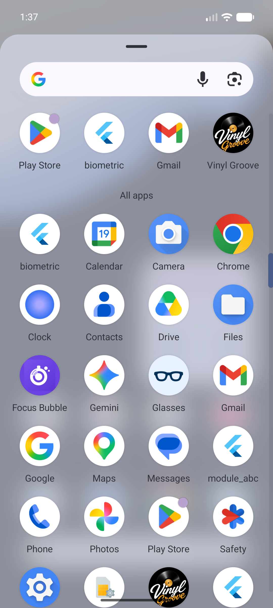
② 이름 최소 글자 수 오류 −0.8 (12번)
과제는 "최소 2자, 최대 20자"인데 2자(ab)를 입력하고 Enter를 눌러도 "3자 이상" 오류가 나온다. 안내 문구까지 3자로 적혀 있다.
정상 이름인 2자가 다음 화면으로 이동하지 못하는 것도 별도로 감점했다(하위 항목 2번, 5번 각 −0.4). 21자는 오류, 20자는 통과하는 것은 확인했다(캡처 41, 42).
위치: lib/main.dart:341-342
③ 정보 확인 화면 동작 없음 −0.9 (22번)
이름·나이·생일·시간 영역을 눌러도 아무 일도 일어나지 않는다. "시작하기"도 debugPrint만 찍고 끝나서 홈(빈 화면)으로 이동하지 않는다. 요구사항 4개 중 값 표시 1개만 충족했다.
위치: infoBox(main.dart:749)에 탭 처리가 없고, main.dart:820-823에 TODO가 남아 있다.


④ 날짜 화면 안내 문구 누락 −0.2 (17번)
"태어난 날짜를 입력해주세요." 텍스트가 없어 로고 아래가 비어 있다.
원인: messages[4]가 빈 문자열이다 (main.dart:36, 주석 "문구 없음").
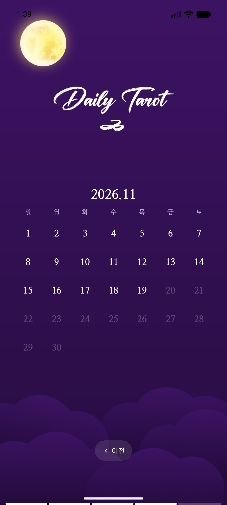
⑤ APK 파일명·위치 −1.0 (8번)
규칙은 소스 루트에 Module_A_XXX.apk(XXX = 선수 번호)이다. 현재는 apk/daily_tarot.apk이다. 파일명 규칙과 위치, 두 하위 항목(각 0.5)이 모두 어긋난다.
※ 정확한 감점 단위는 심사위원 판단에 따라 달라질 수 있다.
파일 위치026-reg-hsu/apk/daily_tarot.apk (82.7MB)
⑥ 시간 화면의 이전 버튼 목적지 −0.4 (20번)
채점표 20-5는 "이전 버튼 클릭 시 성별 선택 화면으로 이동"이다. 코드는 모든 단계에서 currentStep--라서 날짜 화면으로 간다. 에뮬레이터에서 직접 확인했다(캡처 46).
과제 문서의 오타일 수 있으니 대회 때는 출제 위원에게 확인하거나 문서대로 구현하는 쪽이 안전하다.
위치: main.dart:257-263
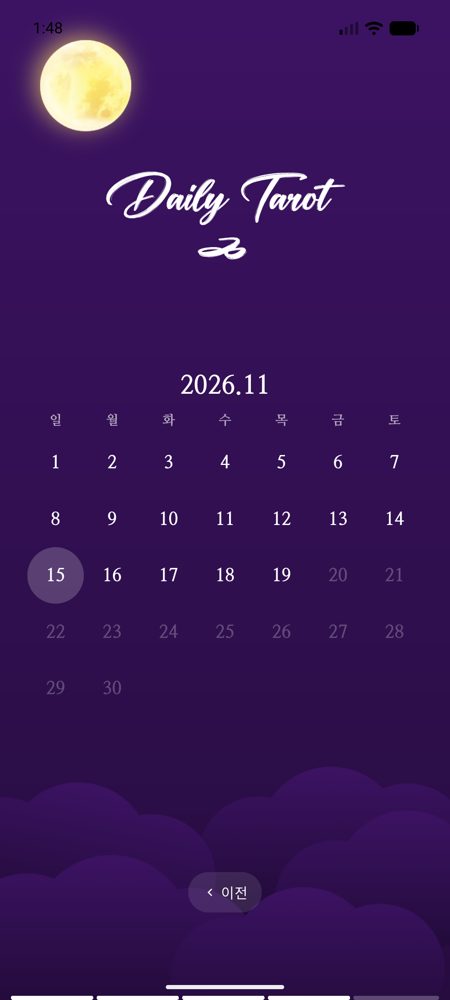
⑦ 주관 항목에서 점수가 깎일 만한 곳 (주관)
- 에러 시 입력창 모양이 바뀐다. 평소엔 둥근 테두리인데 에러가 뜨면 밑줄로 바뀐다.
errorBorder를 지정하지 않았기 때문이다. (정보 입력 일치도, 2번) - 이전으로 돌아오면 입력값이 사라진다. 나이 화면으로 돌아가면 빈칸이다.
name,age변수가 있는데TextField에 연결하지 않았다. - 이름에 한글·영문 외 문자를 조용히 막는다. 이유를 알려주지 않아서 "친절한 메시지"(6번) 4등급을 받기 어렵다. 예: "이름 항목에는 한글과 영문만 입력할 수 있어요."
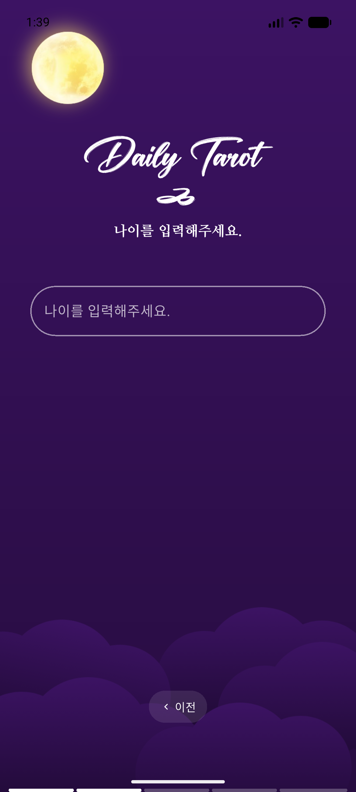
고칠 순서
- 앱 이름·아이콘 교체 (7번) · 5분 · +1.0
- 확인 화면 이동 + 빈 홈 화면 (22번) · 15분 · +0.9
- APK 이름·위치 정리 (8번) · 3분 · +1.0
- 이름 최소 2자 (12번) · 1분 · +0.8
- 날짜 안내 문구 (17번) · 1분 · +0.2
- 시간 화면 이전 버튼 목적지 (20번) · 5분 · +0.4
합계 약 +4.3점이다. 주관 항목(날짜·시간 화면 디자인, 버튼 위치)은 별도로 개선할 수 있다.
2-1. 프로토타입 대조 (주관 감점 근거)
왼쪽이 과제 PDF 원본 프로토타입, 오른쪽이 에뮬레이터에서 찍은 앱 화면이다.
| 화면 | 프로토타입 | 앱 | 반영 |
|---|---|---|---|
| 온보딩 | 문구 y≈0.42, 버튼 y≈0.64, 진행 막대 없음 | 문구 0.37, 버튼 0.56, 흐린 진행 막대 표시 | 주관 1 |
| 날짜 | 안내 문구 있음, 요일 줄 없음, 이전·다음 달 흐린 날짜 표시 | 안내 문구 없음, 요일 줄 있음, 빈칸 | 17번 −0.2, 주관 2 |
| 시간(시) | 숫자 1~12 | 01~12 (0 채움) | 주관 2 |
| 시간(분) | 같은 1~12 숫자 위에서 선택 (12 = 00분) | 00~55 표기 | 주관 2 (기능상 문제는 없음) |
| 확인 | 시작하기 버튼 y≈0.77 | 0.855, 구름과 겹침 | 주관 3 |
| 공통 | 에러가 떠도 둥근 입력창 유지(추정) | 에러 시 밑줄로 바뀜 | 주관 2 |
| 공통 | — | 상태바 글자(시계)가 어두운 색이라 짙은 보라 배경에서 거의 안 보임 | 참고 (SystemUiOverlayStyle 권장) |
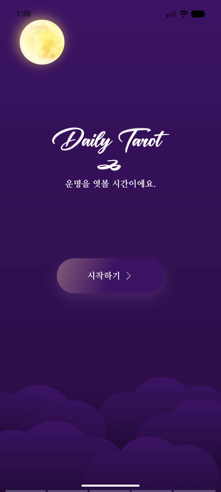
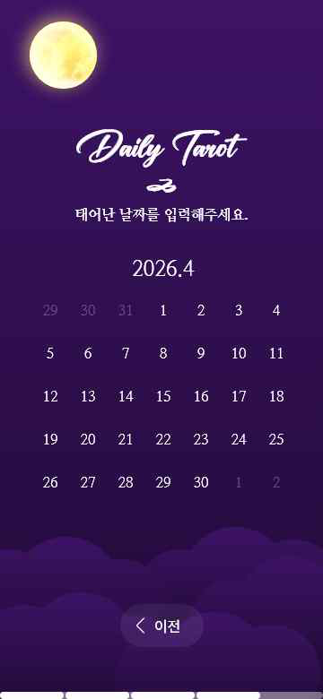
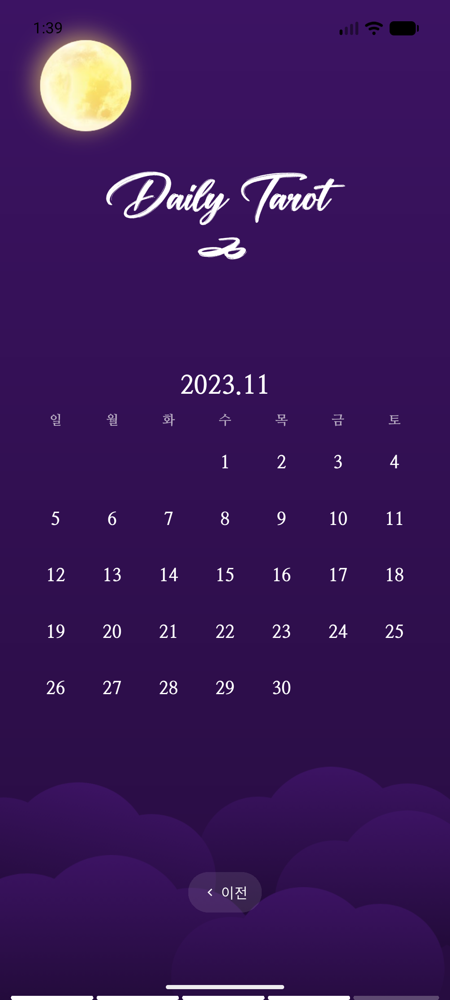

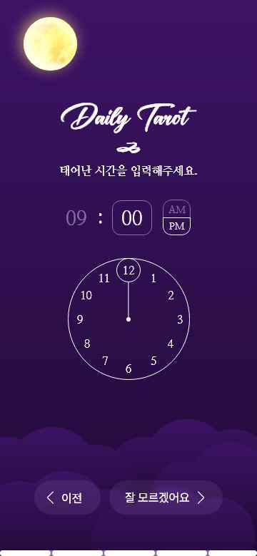
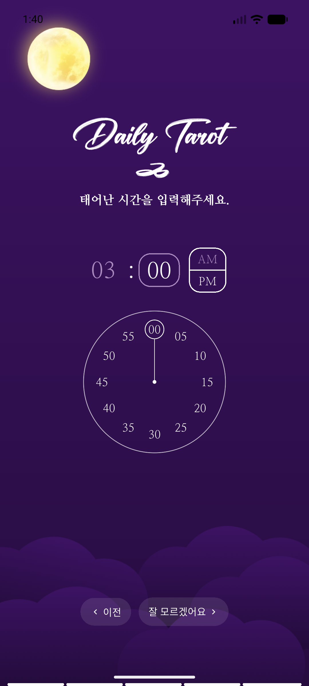

3. 코드 리뷰
코드의 분류 없음
- 한 파일안에 코드를 넣으면 어느 부분이 어떤 역할을 하는지 찾기 어렵고 일일이 내려가며 읽기 어렵다.
- 코드 분류 및 가독성을 위해 폴더를 나누어 그 안에 파일을 만들어 작업하자 현서야.
특정부분에 몰려있는 과도한 함수화
- 적절한 함수화는 반복되는 코드를 줄이고 코드를 재사용할 수 있지만, 과도한 함수화는 오히려 전체 구조를 얽히게 하고 이를 읽는 사람으로 하여금 실행 흐름 파악에 대한 어려움과 불필요한 간섭을 만들어 낼 수 있다.
- 너무 작게 쪼개서 함수를 만드는 것은 읽는 사람이 함수를 계속해서 건너뛰어 보게되고 함수 하나를 수정하면 다른 함수들도 수정되기에 조심해야한다.
- 함수화는 좋지만 "과유불급"이란 말이 있듯이 적당히 하는 것이 좋지만 소스 코드가 지금 얽혀서 스파게티 코드처럼 될 수 있는 위험성이 크니 조심하자.
4. 전체 캡처 (화면 순서)
에뮬레이터에서 앱을 실행하며 찍은 화면이다. 파일은 review/screenshot/에 있다.
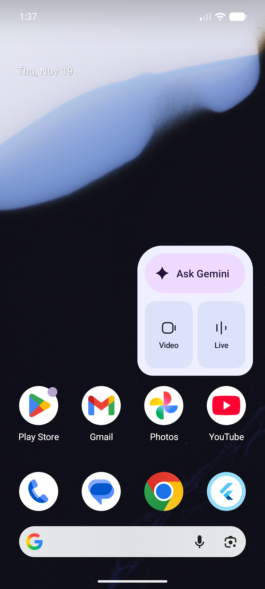
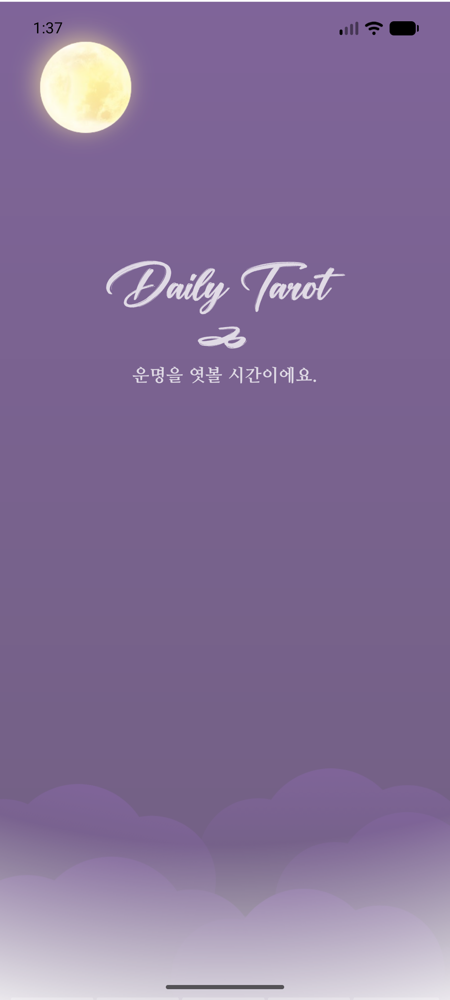
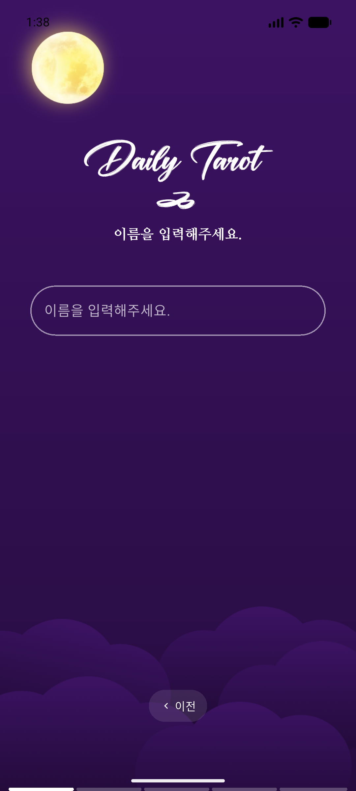
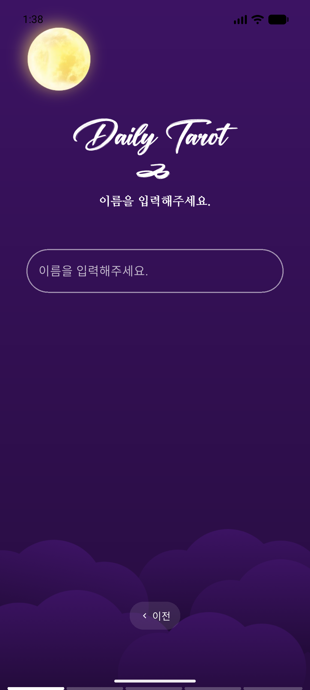
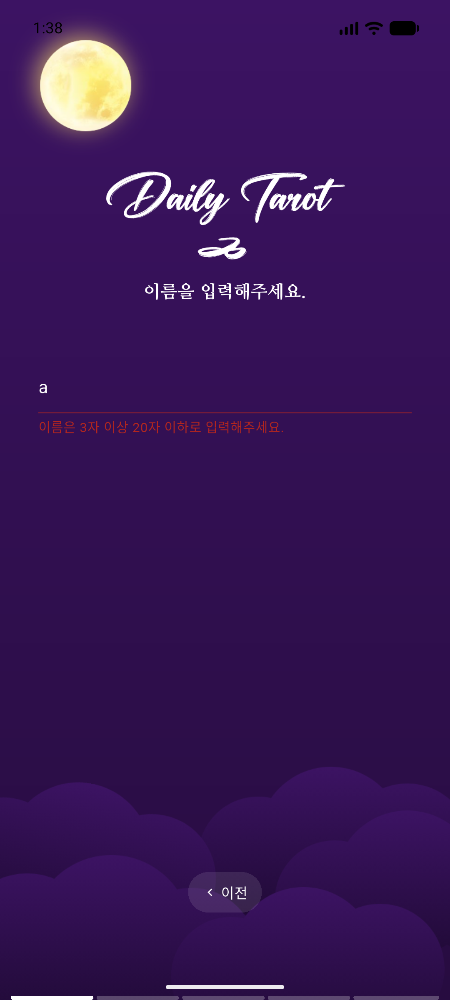

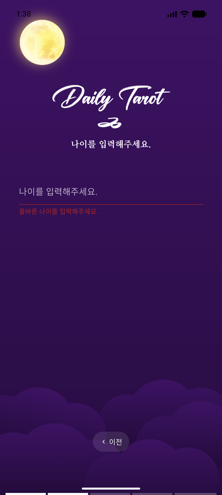
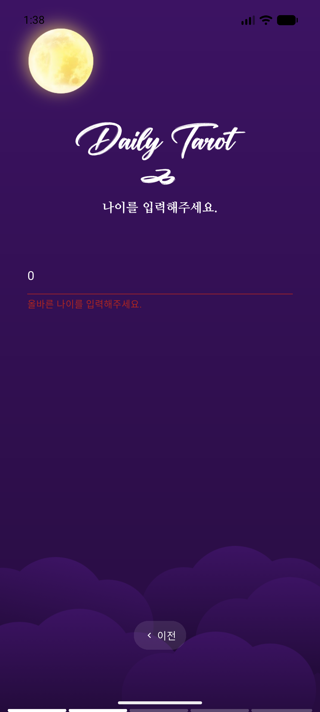
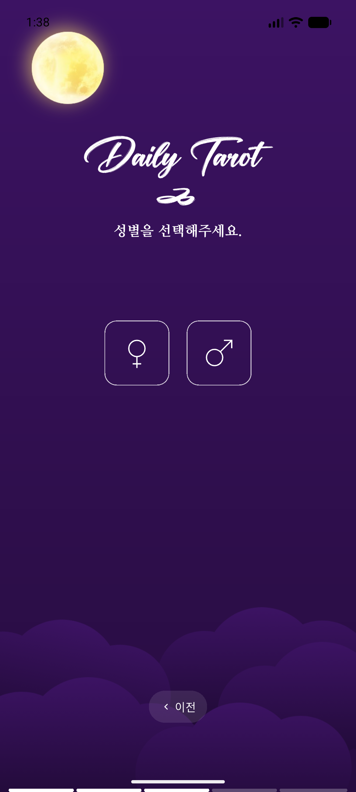

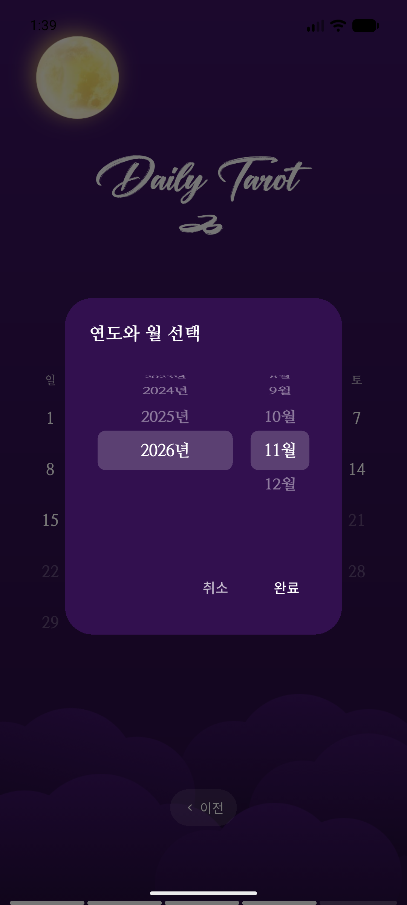
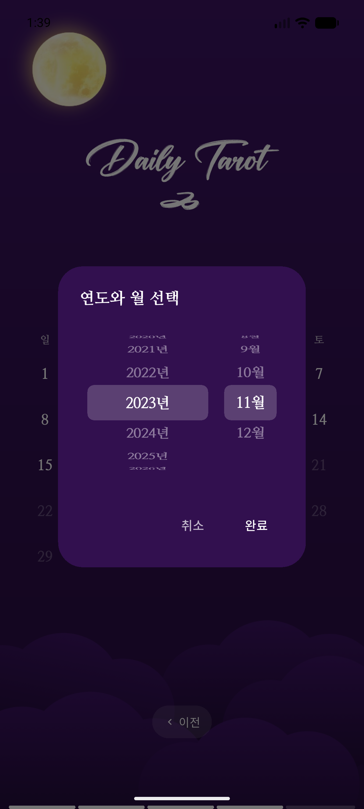

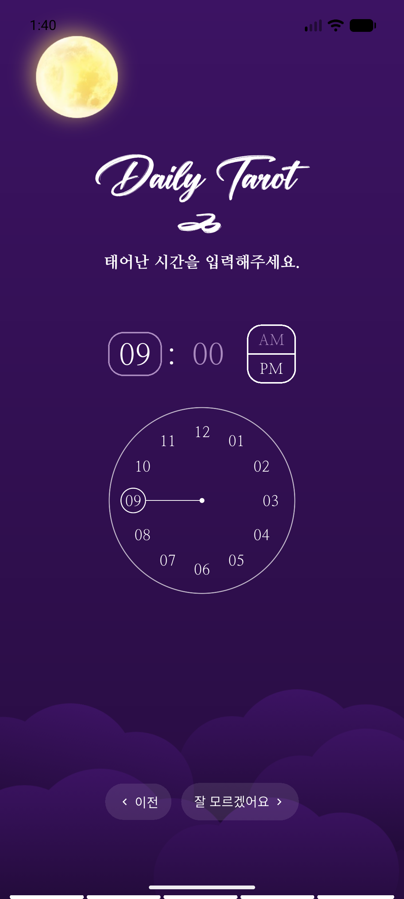

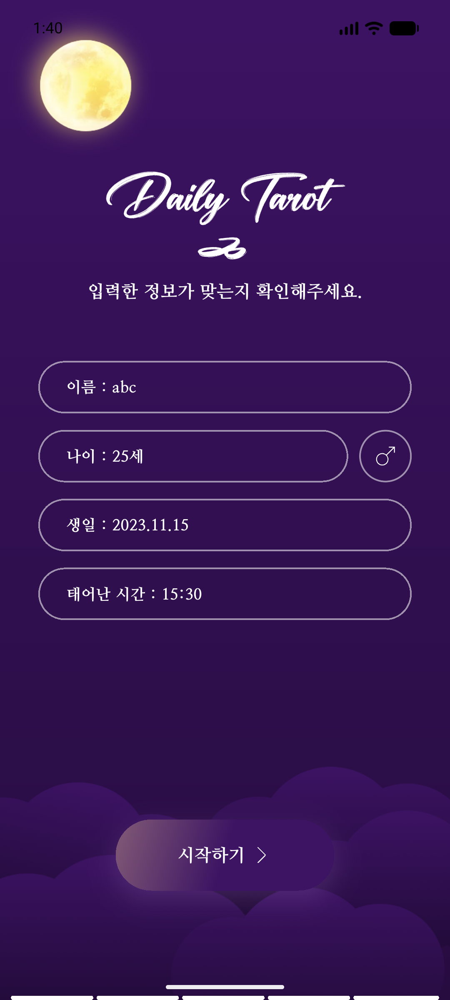

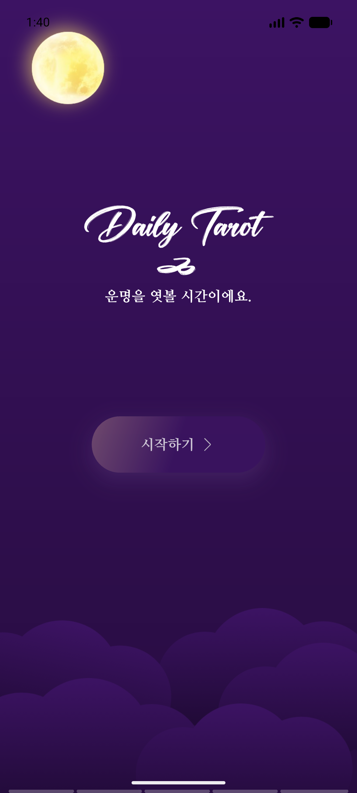
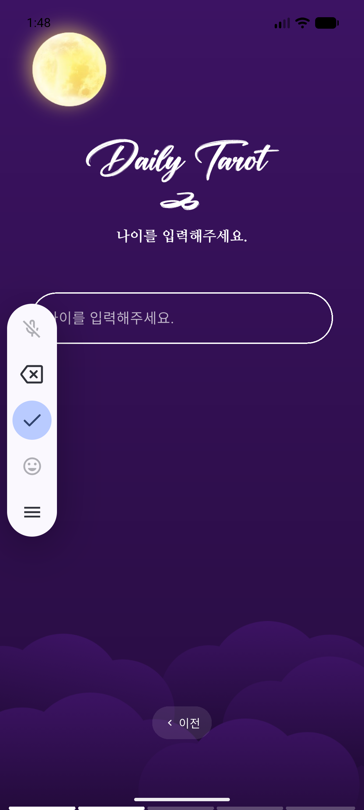
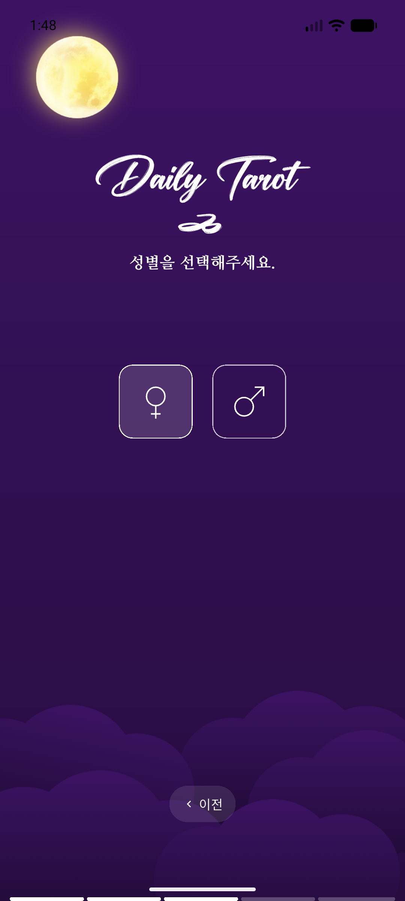
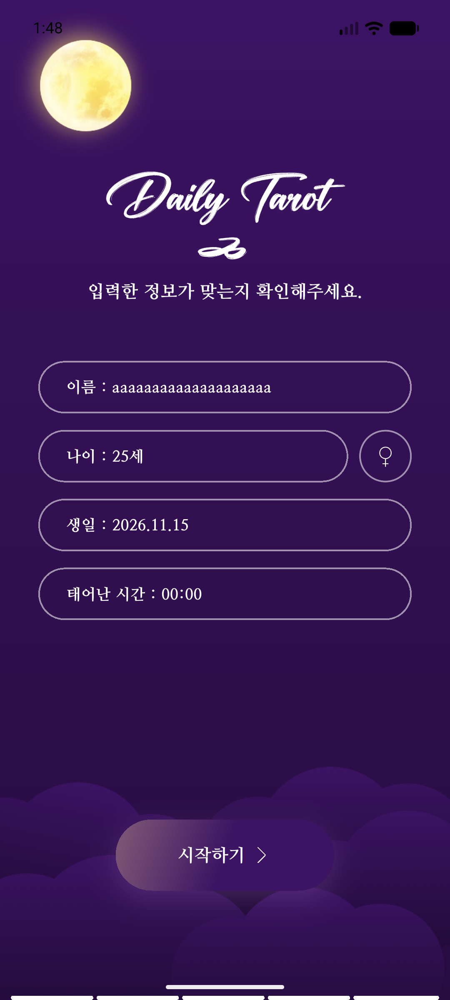